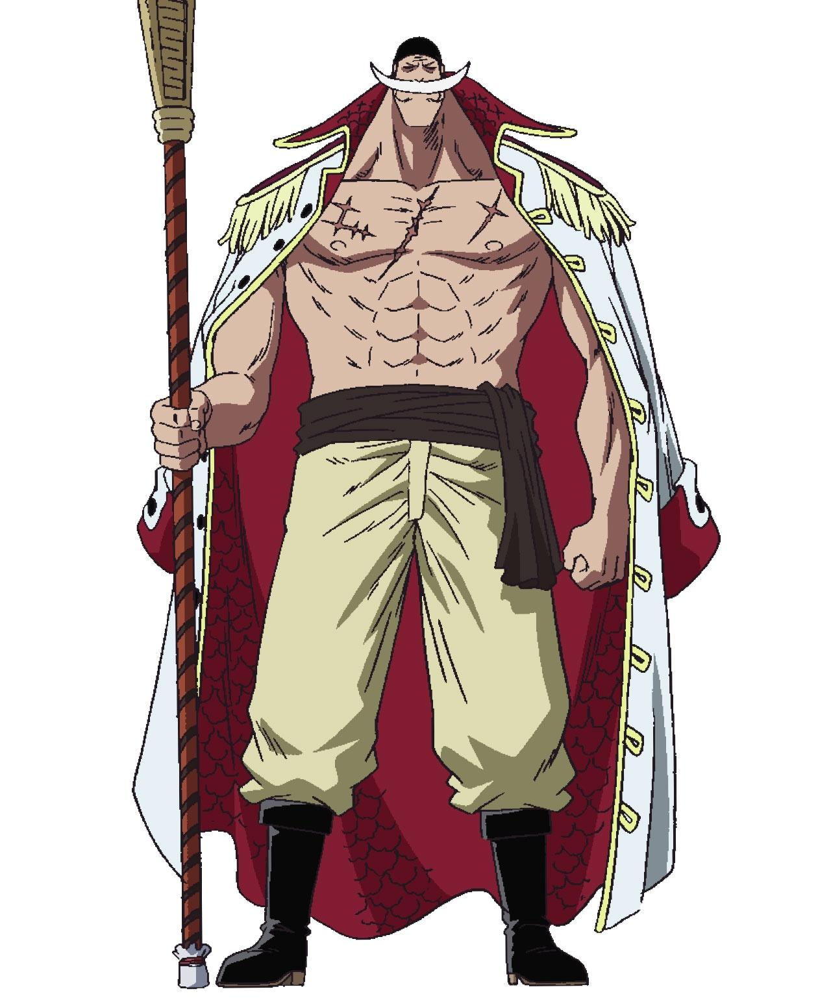
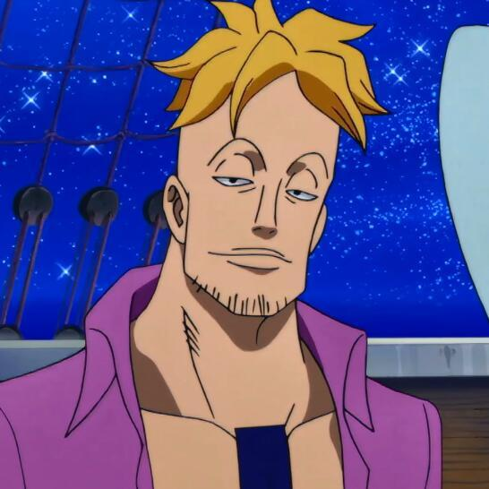
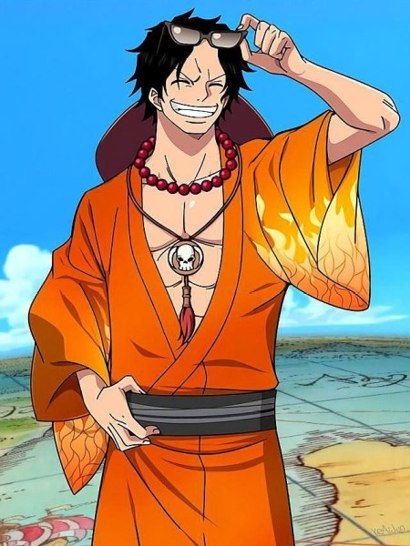

1.主要人物介绍
点击人物图片可切换形态，查看果实能力
爱德华·纽盖特，动漫《航海王》及其衍生作品中的角色，初次登场于漫画234话、动画151集，外号“白胡子”，白胡子航海团的船长。他身上插满输液管，头上戴着黑色的头巾，有着上玄月形状的白色胡子，身形巨大，生前是新世界的四皇之一，被誉为“世界最强的男人”，与罗杰，史基并称为三大传说航海家。
|
 |
马尔科，动漫《航海王》及其衍生作品中的角色，白胡子航海团的第一队队长兼船医，鸟鸟果实幻兽种的拥有者，外号“不死鸟”。白胡子航海团最老的船员之一，被称为白胡子的左膀右臂。性格冷静，十分忠心，丝毫不畏惧“红发”香克斯的强大霸气 |
 |
波特卡斯·D·艾斯，是《航海王》及其衍生作品中的角色，萨博与路飞的结义兄弟，烧烧果实的前任能力者，“航海王”罗杰的遗腹子。 |
 |
2.简介
莫比迪克号，是白胡子航海团的主船，船员们和这母船一起创造了一个时代，最终被赤犬摧毁。
作为四皇白胡子的载船，为白胡子创造了家庭，而莫比迪克号的毁灭，也预示着白胡子这个“最强的男人”的时代即将落幕。白胡子望着被击沉的莫比·迪克号心中默默地说了对不起。
白胡子航海团还有4艘外轮船，比母船小一圈，造型一样，但颜色不同。